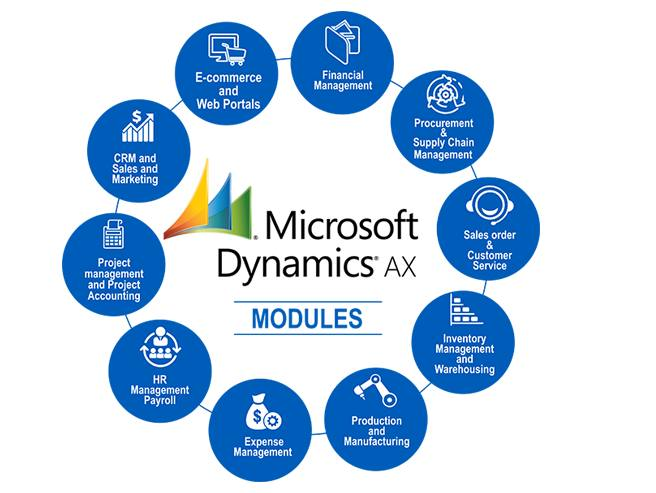

SCM за рубежом
Примером может послужить B2B-система, разработанная компанией Cisco для Ford. Ford, являющийся вторым по объемы
производства автомобильным концерном, и работающая на 200 рынках, столкнулась с рядом проблем. Сложности были связаны с
появлением у потребителей большего количества индивидуальных потребностей и ростом конкуренции, которая требовала
снижения издержек. Cisco совместно со специалистами Ford разработали общую систему, которая позволила компании оптимально
взаимодействовать с дистрибуторами, принимать и обрабатывать заказы, вести базу и документооборот. Система совмещена с SCM-
решением. Это позволило компании упростить систему поставок, а так же снизить издержки на доставку заказов.
Dynamics AX — это мощный программный пакет ERP для управления финансами и процессами производства, ориентированный
на международные компании. Dynamics AX помогает организовывать, автоматизировать и оптимизировать бизнес-процессы в
локальной, облачной или гибридной среде. Оно входит в состав пакета интеллектуальных бизнес-приложений Microsoft Dynamics
AX

Dynamics AX
Looks like CSS3 supports multiple background images; you specify multiple background images; you specify
Looks like CSS3 supports multiple background images; you specify multiple background images; you specify
Looks like CSS3 supports multiple background images; you specify multiple background images; you specify
Looks like CSS3 supports multiple background images; you specify multiple background images; you specify